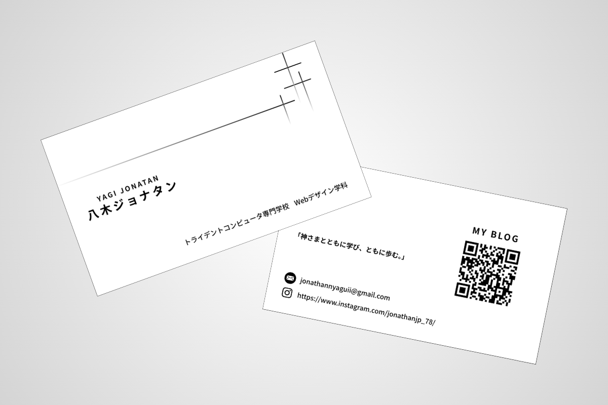
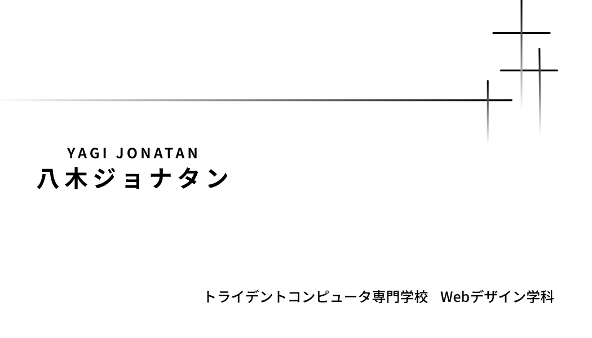
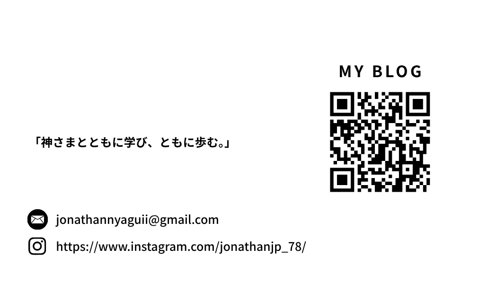

名刺


Overview
カフェのWebサイトを想定し、ターゲットに合わせたデザインを制作しました。 シンプルで落ち着いたトーンを意識しています。
Target
20代〜30代の女性をターゲットに設定し、 視認性と使いやすさを重視しました。
Design
余白を広く取り、写真を活かしたレイアウト設計を行いました。 配色はナチュラルで統一し、柔らかい印象にしています。
Point
情報の優先順位を整理し、ユーザーが迷わない導線設計を意識しました。